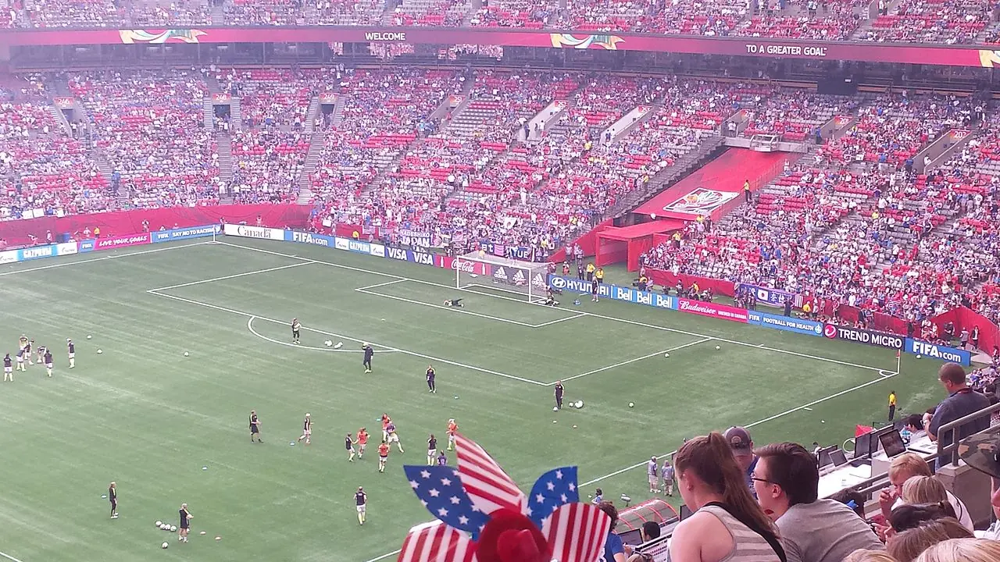

여자 스포츠의 성장은 한두 번의 흥행 경기만으로 판단하기 어렵습니다. 중요한 것은 리그가 반복해서 보이는가입니다. 팬은 자주 볼 수 있는 팀과 선수에게 애정을 쌓습니다. 경기 일정이 불규칙하고 중계 접근이 어렵고 기록 정보가 부족하면 관심은 쉽게 이어지지 않습니다. 여자 스포츠 투자는 관중 수를 늘리는 일만이 아니라 볼 수 있는 길을 안정적으로 만드는 일입니다.
스폰서는 단순히 좋은 이미지만 보고 움직이지 않습니다. 노출 빈도, 팬층의 충성도, 지역 커뮤니티, 선수 이야기, 디지털 콘텐츠 확산 가능성을 함께 봅니다. 여자 스포츠가 성장하려면 경기력뿐 아니라 리그 운영의 예측 가능성이 필요합니다. 어느 날 갑자기 주목받는 것이 아니라 매주 같은 시간에 경기가 있고, 하이라이트가 나오고, 선수 인터뷰가 쌓이고, 팬이 다음 경기를 기다릴 수 있어야 합니다.
중계가 팬을 만듭니다

스포츠 팬덤은 보는 습관에서 시작됩니다. 아무리 좋은 경기가 있어도 보기 어렵다면 팬은 늘기 힘듭니다. TV 중계, 스트리밍, 짧은 하이라이트, 경기 기록 페이지가 촘촘해야 새로운 팬이 들어옵니다. 특히 처음 접하는 리그는 선수 이름과 팀 서사를 알기까지 시간이 걸립니다. 중계는 단순 전달이 아니라 입문 안내입니다. 해설과 그래픽, 선수 소개가 팬의 첫 이해를 돕습니다.
디지털 플랫폼은 여자 스포츠에 기회가 될 수 있습니다. 대형 중계권 경쟁에서 밀리더라도 짧은 영상, 비하인드 콘텐츠, 선수 개인 채널을 통해 팬을 모을 수 있습니다. 그러나 이것이 리그의 공식 노출을 대신할 수는 없습니다. 개인 콘텐츠는 관심을 만들고, 공식 중계는 그 관심을 경기로 연결합니다. 둘이 함께 움직여야 팬덤이 깊어집니다.
일정의 규칙성이 자산입니다
리그가 성장하려면 팬이 생활 속에 경기를 넣을 수 있어야 합니다. 매번 시간과 장소가 크게 바뀌면 관람 습관이 생기기 어렵습니다. 주말 낮 경기, 가족 단위 관람, 학교와 지역 클럽 연계처럼 팬이 오기 쉬운 구조를 설계해야 합니다. 일정은 단순한 운영표가 아니라 팬덤을 만드는 장치입니다.
선수 입장에서도 안정적인 일정은 중요합니다. 이동과 회복, 훈련 계획, 부상 관리가 일정에 달려 있습니다. 리그가 자주 흔들리면 경기력도 흔들립니다. 여자 스포츠의 성장은 선수 처우와도 연결됩니다. 좋은 선수가 오래 뛰고, 부상을 관리받고, 커리어를 설계할 수 있어야 리그의 수준이 올라갑니다. 관중은 결국 좋은 경기를 보러 옵니다.
스폰서십은 이야기를 삽니다
여자 스포츠 스폰서십의 장점은 성장 서사가 분명하다는 점입니다. 유소년 참여, 지역 커뮤니티, 다양성, 가족 관람, 건강한 팬 문화 같은 이야기가 브랜드와 연결될 수 있습니다. 그러나 좋은 이야기만으로는 충분하지 않습니다. 브랜드는 측정 가능한 노출과 팬 반응을 원합니다. 리그는 관중 수, 시청 시간, 디지털 도달, 굿즈 판매, 지역 행사 참여 데이터를 제공할 수 있어야 합니다.
스폰서가 늘면 리그는 더 좋은 환경을 만들 수 있고, 환경이 좋아지면 경기력과 콘텐츠 품질이 올라갑니다. 이 선순환이 만들어지기 전까지는 꾸준한 투자가 필요합니다. 단기 흥행이 없다고 바로 물러서면 리그는 다시 출발선으로 돌아갑니다. 여자 스포츠의 투자는 빠른 이벤트보다 긴 호흡의 미디어 자산을 만드는 일에 가깝습니다.
유소년과 연결되어야 합니다
여자 스포츠가 오래 성장하려면 어린 선수들이 바라볼 무대가 있어야 합니다. 학교와 클럽에서 운동하는 아이들이 프로 선수의 경기를 쉽게 보고, 가족과 함께 경기장에 갈 수 있고, 지역팀을 응원할 수 있어야 합니다. 롤모델은 화면에 자주 등장할 때 힘을 갖습니다. 리그는 경기장 밖에서도 유소년 프로그램과 연결되어야 합니다.
여자 스포츠의 미래를 볼 때는 한 경기의 매진보다 다음 달에도 팬이 다시 볼 수 있는 구조를 확인해야 합니다. 중계가 있고, 일정이 안정적이며, 스폰서가 장기적으로 붙고, 유소년 참여가 이어진다면 성장은 더 단단해집니다. 스포츠 산업에서 반복 노출은 곧 신뢰입니다. 여자 스포츠 투자의 핵심도 바로 그 반복을 만드는 데 있습니다.
여자 스포츠 투자를 볼 때 관중 수 한 번의 급증만으로 판단하면 위험합니다. 중요한 것은 리그가 일정한 시간에 방송되고, 하이라이트가 꾸준히 유통되며, 선수 이야기가 시즌 내내 이어지는지입니다. 팬은 우연히 본 한 경기로 관심을 갖지만, 반복 노출이 있어야 다음 경기로 넘어갑니다. 투자자는 팀 하나의 흥행보다 리그 전체가 달력 안에 자리 잡는지를 봐야 합니다. 스포츠는 습관이 될 때 시장이 됩니다.
스폰서십도 단순한 이미지 개선을 넘어 실질적인 사업 판단으로 변하고 있습니다. 브랜드는 성장하는 팬층, 가족 관중, 젊은 소비자, 지역 커뮤니티와 연결되는 장점을 봅니다. 다만 후원금이 이벤트성으로 끝나면 리그 인프라는 약하게 남습니다. 중계 품질, 훈련 환경, 이동 지원, 유소년 시스템에 돈이 들어가야 선수 경기력이 올라가고 이야기가 길어집니다. 단기 캠페인보다 꾸준한 운영비가 리그의 바닥을 만듭니다.
미디어의 역할은 특히 큽니다. 남자 리그와 같은 방식으로만 비교하면 여자 리그의 성장 곡선이 제대로 보이지 않을 수 있습니다. 선수의 기술, 전술 변화, 팀 역사, 지역 팬덤을 꾸준히 설명하는 콘텐츠가 필요합니다. 관객은 경기 결과만으로 팬이 되지 않고, 누가 어떤 과정을 거쳐 여기까지 왔는지를 알 때 마음을 붙입니다. 여자 스포츠의 성장은 관중석 숫자보다 이야기가 끊기지 않는 미디어 환경에서 더 분명하게 확인됩니다.
선수 개인의 성장 경로도 시장을 키우는 중요한 이야기입니다. 학교 스포츠, 실업팀, 프로 리그, 대표팀으로 이어지는 길이 선명해야 어린 선수와 가족이 미래를 그릴 수 있습니다. 리그가 투자받아도 선수 생계와 훈련 환경이 불안정하면 경기력은 흔들립니다. 여자 스포츠의 성장은 관중석의 환호와 함께 선수들이 오래 뛰어도 되는 구조를 만드는 일에서 완성됩니다.
이 구조가 갖춰질 때 팬은 한 시즌을 따라갈 이유를 얻고, 리그는 다음 투자를 설명할 근거를 갖게 됩니다.